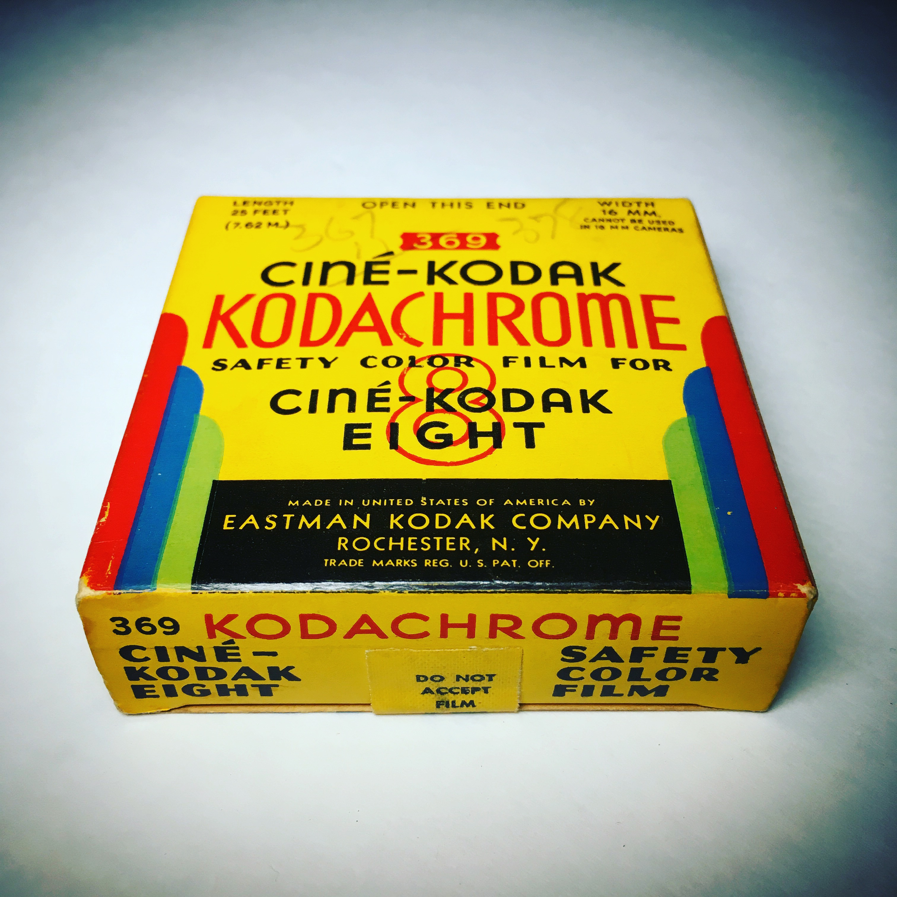

Kodachrome
Кодахром (англ. Kodachrome) — перша кольорова фотоплівка, випущена фірмою Eastman-Kodak на широкий ринок.
Фірма «Кодак» (Kodak) почала випускати цю плівку в 1935 році. Kodachrome стала тоді першою кольоровою діапозитивною плівкою, що надійшла в широкий продаж. Вона швидко здобула собі популярність в усьому світі, оскільки добре передавала кольори і дуже довго зберігалася, не вицвітаючи. Саме цю марку протягом десятиліть вибирали для себе друковані засоби масової інформації. Використовували Kodachrome і в кіноіндустрії. Однак у 2009 році Kodak оголосив про припинення її виробництва: плівка не витримала конкуренції з цифровою фотографією.
Обробка Kodachrome вимагала неабияких знань, і останньою у світі лабораторією, де можна було її проявити, залишалася канзаська Dwayne's Photo — вона проявляла плівку до січня 2011[1]. В останні місяці фірма ледь справлялася із замовленнями: сюди зверталися фотографи, які довгі роки зберігали свої плівки необробленими.
